Chapter 6 GloSIS Soil Data Preparation
6.1 Introduction
For more than a century, tremendous resources and scientific effort have been invested in collecting and analyzing soil information across the globe (Arrouays et al., 2017). These data collection efforts—conducted through national soil surveys, research institutions, agricultural programs, and environmental monitoring initiatives—represent one of the most comprehensive scientific data compilation worldwide. This data, often referred to as legacy data, holds extraordinary potential with applications spanning food security, climate change mitigation, land degradation assessment, and sustainable land management.
However, this accumulated soil knowledge remains largely inaccessible and unusable for integrated local, regional or global analyses. The challenge is its fragmentation into thousands of isolated data repositories, each maintained independently by different organizations using their own formats, naming conventions, units of measurement, and analytical procedures. When properly compiled, organized, and standardized, historical soil surveys can serve as basic input or validation data for Digital Soil Mapping activities (Medeiros et al., 2024). However, realizing this potential requires solving the fragmentation problem through systematic standardization.
In 2012, FAO formally established the Global Soil Partnership (GSP) to coordinate international efforts in soil governance and soil science. Within this framework, GSP mandated the International Network for Soil Information Institutions (INSII) to develop and implement GloSIS, the Global Soil Information System. Rather than attempting to centralize all soil data into a single organization or location, GloSIS functions as a decentralized spatial data infrastructure that enables soil data management and sharing within a global harmonization framework. National soil institutes, research organizations, and other data holders maintain control of their data in their own systems, but contribute that data to the GloSIS platform following standardized formats and protocols for data preparaation and sharing.
GloSIS makes data comparable across countries and regions. When data is submitted to GloSIS, it undergoes a standardization process that translates local data into a universally understood format, the PostgreSQL GloSIS database. This integration requires systematic preparation, validation, and standardization of individual datasets. This is where the technical infrastructure developed at FAO-GPS (the ETL system described in this manual) becomes essential. Before soil data can contribute meaningfully to global analysis, it must be carefully prepared, quality-checked, and transformed into the standardized format that GloSIS requires.
In this section, we introduce the key concepts of data harmonization and standardization in line with GloSIS database requirements, and demonstrate how to use the GloSIS-ETL to prepare data and load it into the GloSIS database structure. The exercises use the soil legacy dataset provided in the training materials as a practical example.
6.2 The GloSIS database
The GloSIS database is a PostgreSQL/PostGIS relational database that implements the GloSIS data model to store soil observations in a standardized, quality-controlled structure. It is aligned with the concepts for the digital exchange of soil-related data outlined in ISO 28258 and it is designed to make soil data consistent and comparable across countries and projects by enforcing common structures, controlled vocabularies, and validation rules. It serves as the central repository for harmonized soil data—linking spatial sampling locations, methods and procedures, and analytical results—so that datasets from different sources can be integrated and compared consistently worldwide.
The International Organization for Standardization (ISO) established ISO 28258: “Soil quality—Digital exchange of information on soil and soil-related data” as the international standard for digital soil data representation and exchange. ISO 28258 defines how soil-related information is logically organized, the hierarchical and relational structure connecting soil observations, definitions of soil concepts following international conventions, metadata requirements and quality assurance procedures.
By aligning with ISO 28258, the GloSIS database provides the infrastructure needed for global soil data integration and interoperability.
The Glosis database organizes data into the five standard soil-related categories, each with specific subcategories:
Site: Represents the broader environment where soil investigations occur, capturing context such as terrain, climate, and land-use.Plot: A specific location for soil investigation where profiles and samples are collected. It is further classified into:Surface: A polygonal area where soil properties are assumed to be relatively homogeneous.TrialPit: A manually excavated pit for detailed soil examination.Borehole: A drilled hole for subsurface soil sampling.
Profile: A vertical sequence of soil horizons or layers at a given location (referred to asProfileElementin ISO 28258).Element– Subdivisions of a profile based on depth, further categorized as:Horizon– A natural, homogeneous soil layer formed by pedogenesis.Layer– An arbitrarily defined soil section for analysis at fixed depths.
Specimen– A physical sample extracted at a defined depth, typically analyzed in laboratories for chemical and physical properties (referred to asSoilSpecimenin ISO 28258).
Each of these ‘features of interest’ is represented by dedicated tables in the relational database. Because they describe different entities, they store different types of information and attributes. The challenge is to translate the raw soil data files into this structured database model.
6.3 Features of interest: Understanding the XLSX Template
Preparing data for GloSIS begins with organizing soil information according to the features of interest used in the GloSIS database (Site, Plot, Profile, Element, and Specimen). To support this process, GloSIS provides an XLSX template that offers a user-friendly way to compile soil data in a structure that mirrors the relational tables of the PostgreSQL/PostGIS database. When completed correctly, this template is used by the GloSIS-ETL Standardization tool to translate the information into the PostgreSQL database structure.
The template contains multiple sheets, each corresponding to a specific feature of interest and its associated attributes. By completing these sheets, users effectively split raw or legacy datasets into the categories required for harmonization and standardization prior to loading.
This organization can be done manually, by entering values directly into the template, or automatically using dedicated tools such as GloSIS-ETL Harmonization introduced in the next section. In both cases, understanding the structure and purpose of the XLSX template is essential to ensure that data are prepared correctly.
In addition to the feature-of-interest sheets, the template includes dedicated tabs for documenting analytical procedures (including methods and units of measurement), metadata, and original analytical values, supporting traceability when unit conversions to GloSIS standards are required.
The following sections provide a detailed overview of each sheet included in the XLSX template for data standardization.
6.3.1 Plot Data Sheet
The Plot Data sheet (Fig. 6.1) provides information about the sampling location. It includes identification of the project in which the sample was collected (project_code), identifiers for the sampling site (site_code), plot (plot_code), plot type (plot_type) and profile (profile_code). The plot_type specifies the sampling method: Borehole (auger sample), TrialPit (open profile excavation), or Surface (area-based description).
The n_layers column indicates the number of soil samples collected at different depths for a given site. The number of samples corresponds to the number of horizons or layers collected at each sampling profile. For example, if a soil profile contains three horizons and all contains have been sampled, the n_layers value will be 3.
Date stores the date when the survey was conducted. The date must follow ISO-8601 (“YYYY-MM-DD” format).
The following columns capture the georeferencing of the sampling site (latitude, longitude, and altitude), together with supporting location metadata (positional_accuracy - accuracy estimate, extent - spatial extent of sampling area and map_sheet_code - reference map sheet identifier; all of them not mandatory). Coordinates must be recorded in decimal degrees using the EPSG:4326 (WGS84) coordinate reference system to ensure global consistency and interoperability within the GloSIS database.
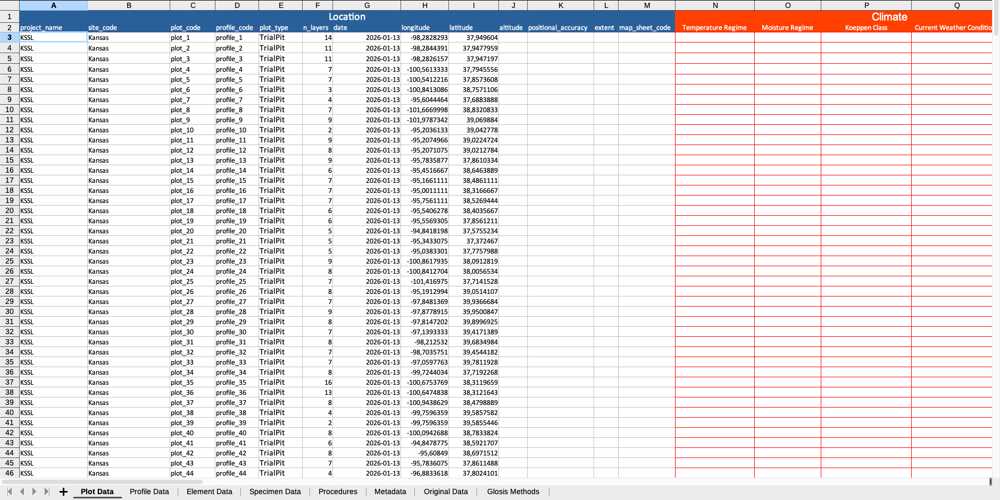
Figure 6.1: Information in the Plot Data Sheet.
Finally, columns N:BJ describe the soil formation factors in the sampling plot following the FAO Guidelines for Soil Description 4th Ed. (2006) if available. These columns are optional and only can be updated manually directly on the XLSX template.
6.3.2 Profile Data Sheet
This sheet includes profile identification profile_code and profile descriptors (FAO and Soil USDA classification Systems and Soil Depth classes according to the 4th edition of the FAO Guidelines for Soil Description. The profile_code column act as the join parameter to link profiles to the information on the other sheets, thus it is important to ensure its consistency over the whole file tabs.
This sheet records the profile identifier (profile_code) and key profile descriptors, including soil profile classification (FAO and USDA Soil Taxonomy) and soil depth classes following the 4th edition of the FAO Guidelines for Soil Description. The profile_code field serves as the main join key linking profile records to related information in the other sheets, so it is essential to keep it consistent across all tabs in the file.
6.3.3 Element Data Sheet
An Element is a depth-based subdivision of a soil profile and can be described as either:
Horizon: a natural, relatively homogeneous layer formed by pedogenesisLayer: an arbitrarily defined section, often based on fixed depth intervals for sampling and analysis
Figure 6.2 illustrates the differences between these two element types.

Figure 6.2: Horizon vs Layer en Element Features.
For each sampled horizon or layer, the Element Data sheet records the identifiers used to link the profile and the element (profile_code, element_code), and where applicable, the horizon classification identifier (horizon_code) features. It also specifies the element_type (Horizon or Layer) and the depth limits of the element (upper_depth, lower_depth)
As in the Profile Data sheet, key morphological characteristics following the 4th edition of the FAO Guidelines for Soil Description can optionally be added manually in columns H:CC (Fig. 6.3).
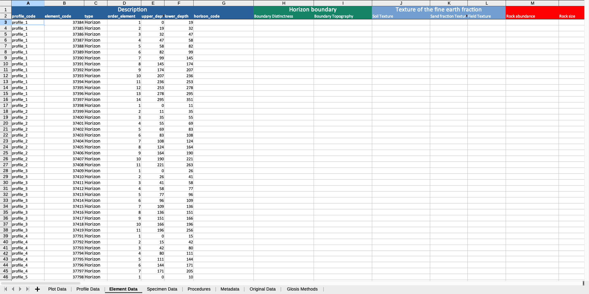
Figure 6.3: Element Data Sheet in the XLSX template.
6.3.4 Specimen Data Sheet
The main purpose of the Specimen Data is to store the laboratory analytical results for each horizon or layer registered in Element Data. It includes the identifiers needed to link analytical results to the corresponding profile and element (profile_code, element_code) and the laboratory sample label (specimen_code) in columns A:C (Fig. 6.4).
The subsequent columns contain the analytical values for each measured soil property.
Because these values are loaded into the GloSIS database, all analytical results in this sheet must be expressed in the GloSIS standard units of measurement. If necessary, values should be converted to the required units prior to ingestion. These values are automatically transformed if the GloSIS-ETL Harmonization tool is used to create the template.
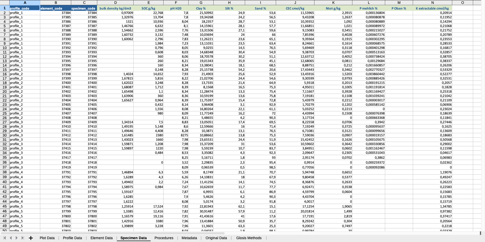
Figure 6.4: Specimen Data Sheet in the XLSX template.
** Note that the values in this sheet are already converted to the corresponding GloSIS standard units of measurement. The original values remain as a backup in the sheet Original Data.
6.3.5 Procedures Sheet
The Procedures sheet defines the relationship between the measured soil properties, their standardized GloSIS property names, the laboratory methods, and the units of measurement. This linkage is essential to ensure consistency and interoperability across datasets and to support correct ingestion into the GloSIS database.
The sheet is linked to the reference list provided in the GloSIS Methods sheet, which contains the approved set of standardized soil property names, analytical procedures, and measurement units. Only properties, methods, and units included in GloSIS Methods can be uploaded to the GloSIS database. Any measured property, method, or unit that is not present in this list cannot be ingested and must either be removed or replaced with an accepted equivalent. Missing procedures can be reported to the GloSIS Working Group for possible inclusion, together with documentation describing the soil property, the analytical method, and the unit of measurement. The reference list is maintained and updated over time to incorporate new analytical properties, methods, and units.
In practical terms, this sheet links the analytical values in Specimen Data to their corresponding analytical metadata (Fig. 6.5). The first column (soil_property) lists the soil properties included in Specimen Data, in the same order in which they appear. Columns B–D provide drop-down menus to select the corresponding standard GloSIS property name, analytical procedure, and unit of measurement. This sheet is automatically populated by the GloSIS-ETL Harmonization tool.
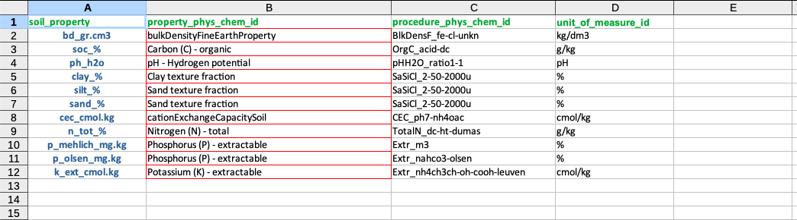
Figure 6.5: Procedures Sheet in the XLSX template.
6.3.6 Metadata Sheet
It includes detailed metadata to identify the different data providers (Fig. 6.6) .
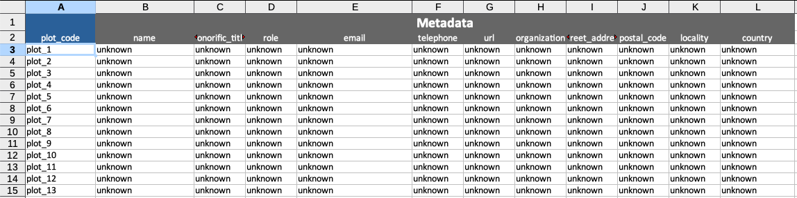
Figure 6.6: Procedures Sheet in the XLSX template.
6.3.7 Original Data Sheet
The Original Data sheet (Fig. 6.7) stores the raw values from soil analyses and descriptions. Although optional, it is recommended for maintaining a record of the original measurements, especially when unit conversions or other transformations are required. Keeping these values supports traceability and good documentation practices.
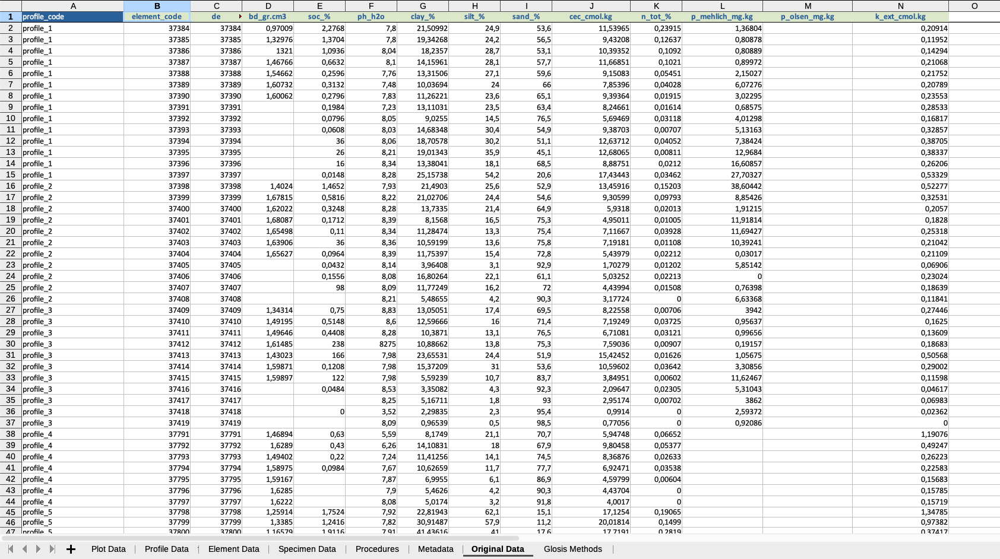
Figure 6.7: Procedures Sheet in the XLSX template.
Values in the Original Data sheet can be linked (e.g., via formulas) to the Element Data sheet, allowing adjusted values to be transformed and transferred automatically while preserving the original records. This helps users track how each soil property was measured and in which units the results were reported. The original data are automatically preserved when using the GloSIS-ETL Harmonization tool.
6.3.8 GloSIS Methods sheet
The GloSIS Methods sheet is the reference table that defines which soil properties, analytical procedures, and units of measurement are accepted for loading data into the GloSIS database. It is used by the Procedures sheet (via drop-down lists) and by the GloSIS-ETL Harmonization tool to validate inputs and apply unit conversions consistently.
The main columns are:
property_phys_chem_id: The standardized GloSIS name for the soil property (e.g., Acidity – exchangeable).`procedure_phys_chem_idv: The standardized identifier for the analytical method used to measure that property (e.g., ExchAcid_ph0-kcl1m).
unit_of_measure_id: The required unit for storing the value in GloSIS (e.g., cmol/kg).value_min / value_max: The admissible bounds for quality control. Values outside this range can be flagged during harmonization/validation.definition: A short description of what is being measured and how (e.g., exchangeable acidity (H+Al) extracted with 1 M KCl).common_input_units: A list of commonly encountered units in legacy datasets that can be converted into the GloSIS standard units.conversion_factors: The factors applied to each unit listed incommon_input_units, in the same order, to convert to the GloSIS unit.notes: Additional clarifications (e.g., equivalences between units).
6.4 GloSIS-ETL
Because the GloSIS database enforces a structured model, data cannot be loaded reliably as free-form from heterogeneous legacy information. The GloSIS-ETL pipeline provides a practical workflow to harmonize, standardize, and load soil legacy data into the GloSIS PostgreSQL/PostGIS schema in a consistent and reproducible way.
GloSIS-ETL transforms raw datasets into database-ready tables by automating the harmonization and standardization tasks required in GloSIS. This streamlines ingestion into the relational database, improves accessibility for non-technical users, and ensures that soil datasets from different sources can be integrated and compared effectively.
The GloSIS-ETL services are provided as Docker containers, which allow users to deploy and manage the system without manually installing software dependencies. This approach ensures stability, compatibility, and easy updates. The installation and setup of the ETL are described in the last section of this session.
The GloSIS-ETL (Figure 6.8) includes three applications:
- GloSIS Data Harmonization: Checks and harmonizes raw input data (e.g., coordinates, depth intervals, missing or inconsistent fields, out-of-range lab values) and define units/methods for GloSIS conventions to produce a clean, consistent dataset for loading.
- GloSIS Data Standardization: Maps harmonized data to ISO 28258 and the GloSIS data model, applying controlled vocabularies and standardized identifiers so the dataset is fully compliant with the target schema.
- GloSIS Data Viewer: Allows users to explore and validate the standardized data before and/or after loading to confirm that records, attributes, and values were ingested correctly in the database.
These applications are distributed as a containerized project in Docker, enabling deployment on any computer. The ETL package also includes PostgreSQL with access to the GloSIS database schema.
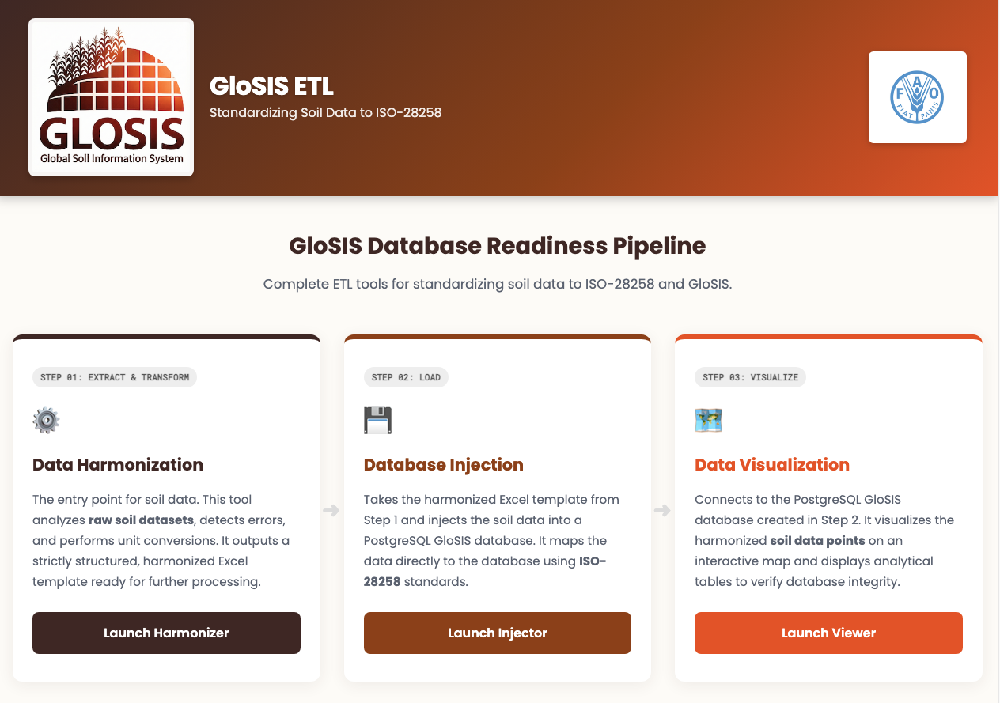
Figure 6.8: Application in the GloSIS-ETL.
6.4.1 Installation and Setup of the GloSIS-ETL
The GloSIS-ETL application is distributed as a set of Docker containers orchestrated by Docker Compose. This means users do not need to manually install PostgreSQL, R, or any other dependency, all software requirements are pre-configured inside the containers and managed automatically through the docker-compose.yml file introduced in the previous section.
The application consists of two main services, each running as an independent container:
glosis-db– A PostGIS-enabled PostgreSQL database (based onpostgis/postgis:17-3.5) that stores soil data following the GloSIS / ISO 28258 standard. It is automatically initialized with the GloSIS schema via SQL scripts bundled in the repository.glosis-etl– A Shiny Server application that serves a landing page and three web modules:- Harmonization (
/harmonization) – Converts local soil data into GloSIS-compatible format using Excel templates. - Standardization (
/standardization) – Injects harmonized Excel data into the PostgreSQL database. - Data Viewer (
/dataviewer) – An interactive dashboard to explore, visualize, and subset the data stored in the database.
- Harmonization (
An optional third service, glosis-pgadmin, provides a pgAdmin 4 web interface for direct database administration (see Optional Services below).
Before proceeding, ensure that Docker Desktop is installed and running on your computer (see Installation of Docker Desktop and Docker Compose in Module 1).
The easiest way to install the GloSIS-ETL services is by downloading the repository and using Docker Compose to build and run the containers.
Steps:
Ensure Docker Desktop is running.
Download the GloSIS-ETL repository from GitHub:
Go to:
https://github.com/FAO-SID/glosis-etlClick the green “Code” button, then select Download ZIP (Figure 6.9).
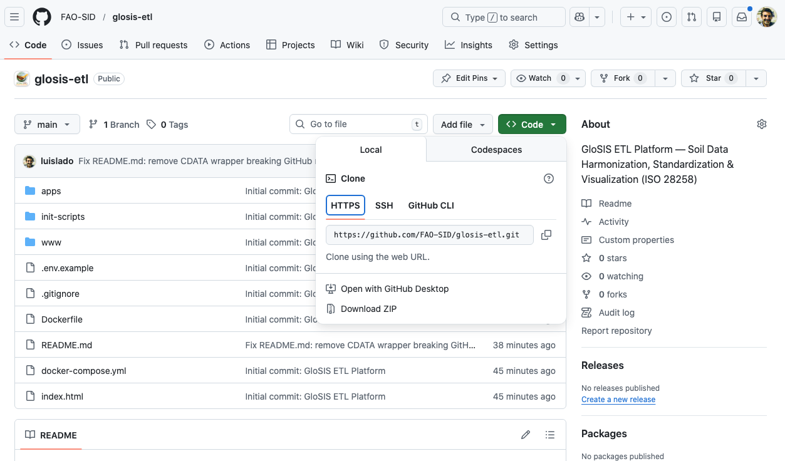
Figure 6.9: Cloning the repository.
Alternatively, if you have Git installed, you can clone the repository:
git clone https://github.com/FAO-SID/glosis-etl.gitExtract the ZIP file (if downloaded) to a folder on your computer (e.g., the
Desktopfolder).Configure the environment variables.
Inside the extracted folder you will find a file called
.env.example. Copy it and rename the copy to.env:Windows (Command Prompt):
copy .env.example .envmacOS / Linux:
cp .env.example .env
The default values use
glosisas the database name, user, and password. For production deployments, edit the.envfile and change thePOSTGRES_PASSWORDvalue.Open a Terminal or Command Prompt and navigate to the extracted folder:
cd Desktop/glosis-etlStart the GloSIS services by running:
docker compose up -d --buildNote: The
--buildflag is required the first time to build theglosis-etlShiny application image from the Dockerfile. Subsequent runs can omit it unless the application code has changed. The first build may take 10–15 minutes as it downloads base images and installs R packages.Note: On older systems you may need to use
docker-compose(with a hyphen) instead ofdocker compose.
6.4.2 Verify Installation
6.4.2.1 Using Docker Desktop
Open Docker Desktop and check if the containers are running (Figure 6.10).
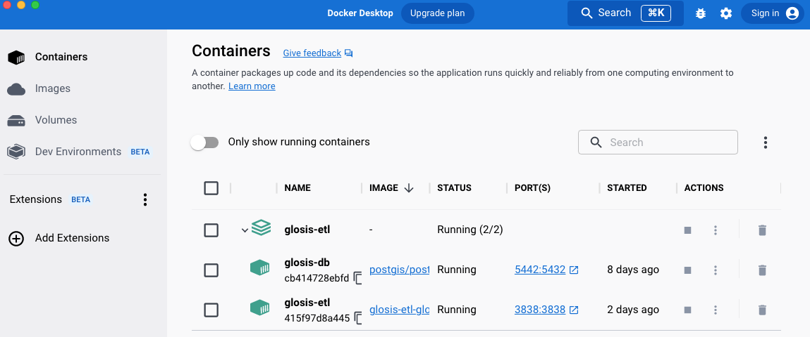
Figure 6.10: Docker Desktop showing running containers.
If everything is working, the project and service icons should be green. If any service fails, the icon will appear **orange*.
6.4.2.2 Using the Terminal
To manually check if the services are running, type:
docker psYou should see an output similar to:
CONTAINER ID IMAGE COMMAND CREATED STATUS PORTS NAMES
415f97d8a445 glosis-etl-glosis-etl "/usr/bin/shiny-serv…" 25 hours ago Up 25 hours (healthy) 0.0.0.0:3838->3838/tcp glosis-etl
cb414728ebfd postgis/postgis:17-3.5 "docker-entrypoint.s…" 7 days ago Up 7 days (healthy) 0.0.0.0:5442->5432/tcp glosis-dbBoth containers should show a status of (healthy).
6.4.2.3 Stopping the Services
To stop the services at any time, use:
docker compose downThis will stop and remove the containers, but your database data will remain intact in the Docker named volume glosis-db-data.
Tip: To completely reset the database (remove all data), run:
docker compose down -v. This deletes the named volumes and the database will be re-initialized from the SQL scripts on the next start.
6.4.3 Optional: pgAdmin Web Interface
The docker-compose.yml file includes an optional pgAdmin 4 service for direct database management. To activate it:
docker compose --profile admin up -dOnce running, access pgAdmin at:
http://localhost:5050Login credentials:
- Email:
admin@glosis.org - Password:
admin
To connect to the GloSIS database from pgAdmin, create a new server with:
- Host:
postgis - Port:
5432 - Database:
glosis - User / Password:
glosis/glosis
6.4.4 GloSIS Database
The GloSIS PostreSQL database is available for connection with external applications such as pgAdmin, DBeaver, QGIS, R, etc., using the parameters listed in Table 6.1.
| Parameter | Value |
|---|---|
| Host | localhost |
| Port | 5442 |
| Database | glosis |
| User | glosis |
| Password | glosis (default) |
Note: The port is
5442(not the standard5432) to avoid conflicts with any locally installed PostgreSQL server.
With this setup, users can easily run and manage the GloSIS-ETL platform and its Shiny web interface while ensuring stability and avoiding conflicts with other PostgreSQL installations.
6.5 The docker-compose.yml File
The docker-compose.yml file defines the complete GloSIS-ETL service architecture. Below is a summary of its key components:
| Component | Type | Purpose |
|---|---|---|
| postgis | Service | PostgreSQL 17 + PostGIS 3.5 database |
| glosis-etl | Service | Shiny Server with landing page and three app modules |
| pgadmin (optional) | Service | pgAdmin 4 web UI for database management |
| glosis-db-data | Volume | Persistent storage for PostgreSQL data |
| glosis-net | Network | Bridge network connecting all services |
The glosis-etl service depends on postgis and will only start once the database passes its health check (pg_isready). Environment variables (database credentials, logging level, etc.) are read from the .env file in the project root.
6.6 The .env File
The .env file stores configuration values that are shared between the services. The available variables are:
# PostgreSQL Database Configuration
POSTGRES_DB=glosis
POSTGRES_USER=glosis
POSTGRES_PASSWORD=glosis # Change in production!
# Application Environment
SHINY_LOG_LEVEL=INFO # Options: DEBUG, INFO, WARN, ERROR
R_MAX_MEM_SIZE=2Gb # R memory limitCAUTION:
- For production deployments, always change the default password (
glosis) to a secure value.
6.7 Accessing the GloSIS-ETL
6.7.1 Landing Page
To open the GloSIS-ETL platform, enter this address in your web browser:
http://localhost:3838/This will load the landing page with links to the three application modules.
6.7.2 Shiny Application Modules
Each module is accessible directly via its URL:
| Module | URL | Description |
|---|---|---|
| Harmonization | http://localhost:3838/harmonization |
Convert local soil data into GloSIS format |
| Standardization | http://localhost:3838/standardization |
Inject harmonized data into the database |
| Data Viewer | http://localhost:3838/dataviewer |
Explore and visualize stored soil data |
6.7.3 GloSIS Data Harmonization
The GloSIS-ETL Harmonization tool (Figure 6.11) provides the foundation for preparation of a clean and documented dataset to be ingested in the GloSIS database.
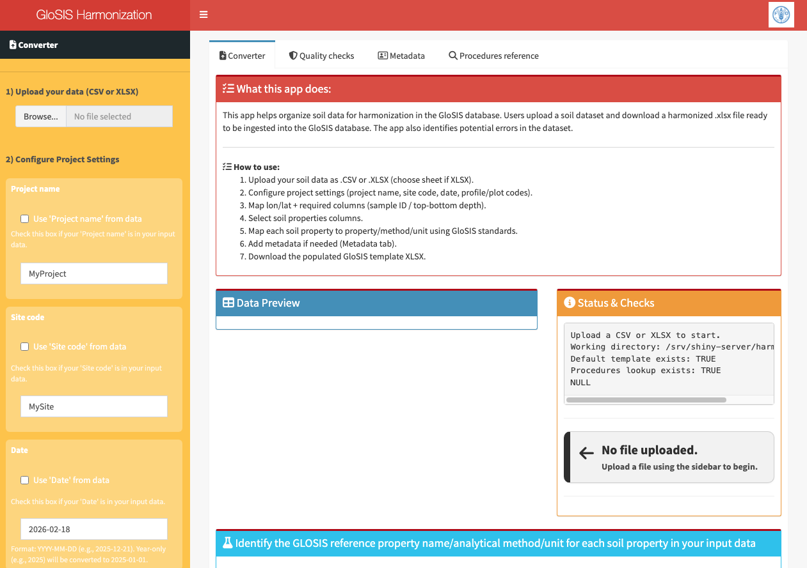
Figure 6.11: GloSIS-ETL Harmonization Tool.
The preparation of the data follows a 3-step quality assurance procedure (Figure 6.12) comprehensive data validation at each stage.

Figure 6.12: GloSIS-ETL Harmonization Tool.
The application performs systematic data quality checks across three domains to produce a XLSX file following the GloSIS standards. This file, once correctly verified, will be used as input in the GloSIS Data Standardization tool to ingest soil data into the GloSIS database.
6.7.4 Step 1: Data Ingestion & Variable Mapping
The first step of the harmonization process involves uploading soil datasets and configuring variable mappings to align with GloSIS standard data structure and naming conventions.
The application accepts the following data formats:
- Excel files (.xlsx)
- CSV files (.csv) - For comma-separated tabular data
6.7.4.1 Data Upload Interface
The 1) Upload your data (CSV or XLSX) section in the left-side menu allows users to upload their raw dataset into the application. Once data is uploaded, the application displays a warning message (Figure (ref?)(fig:etl-harmonization-step1)) indicating which soil data site identification columns must be mapped to standard GloSIS nomenclature.
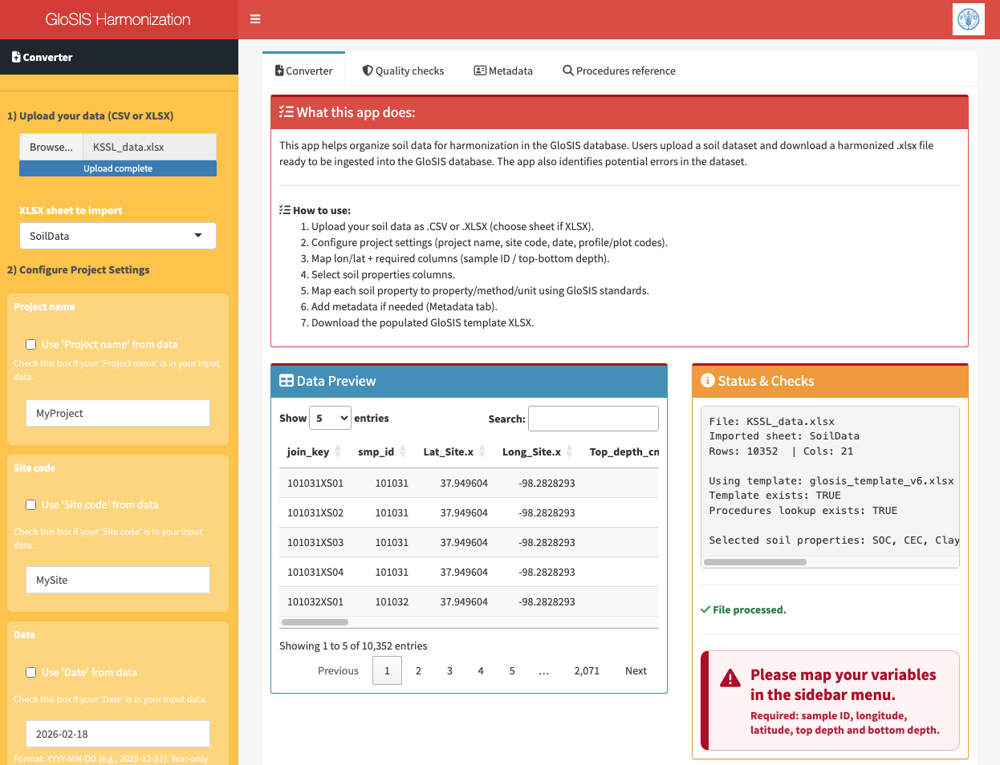
Figure 6.13: Step 1 Warning Message: Required Site Parameter Identification.
6.7.4.2 Parameter Mapping Configuration
Users must systematically map their dataset columns to GloSIS standard variable names through an interactive sidebar menu. The mapping process captures 2 essential categories:
2) Configure Project Settings Site Identification Parameters (Optional - Default values provided if not mapped): - Project Name - Site Code - Date of observation - Profile Code - Plot Code and Plot Type - Horizon ID and Horizon Type
3) Map Plot Parameters Required Plot Parameters (Must be mapped explicitly): - Sample ID (element_code or specimen_code) - Longitude (X coordinate, WGS84) - Latitude (Y coordinate, WGS84) - Upper Depth (cm) - Top boundary of soil layer - Lower Depth (cm) - Bottom boundary of soil layer - Soil analytical properties being measured (Multi-selection) - Each property must be mapped to GloSIS standard nomenclature
The sidebar menu provides dropdown selections for each variable, fuzzy matching to assist in finding correct mappings, and validation warnings if required parameters are not mapped.
6.7.5 Step 2: Quality Check and Quality Report Generation
This step analyses the data values, its integrity and coherence and identifies potential issues with the data. It automatically generates Quality Report for verification and correction of potential mistakes or unconsistencies in the dataset. The validation occurs at three stages, geographic (horizontal location), soil depth (vertical position) and Analytical integrity (missing values, non valid data, data outliers):
6.7.6 Step 2a: Geographic Data Validation
This validation phase ensures that every soil sample is correctly georeferenced with accurate spatial coordinates, maintaining the spatial integrity essential for the GloSIS database.
6.7.6.1 Coordinate Reference System Requirements
The GloSIS database uses EPSG:4326 (WGS84) as its standard coordinate reference system. All geographic coordinates must be identified using this global standard projection.
The application systematically checks for the following geographic data issues:
Coordinate Completeness: - Identifies missing X (longitude) and/or Y (latitude) coordinates
Coordinate Range Validation: - Longitude: −180° to +180°, Latitude: −90° to +90° (global bounds) - Flags coordinates outside standard global ranges as invalid
Duplicate Site Detection: - Identifies potential duplicate sites (multiple profiles at identical coordinates)
6.7.7 Step 2b: Soil Depth Validation
All soil profiles must include both upper and lower depth measurements for each sampled layer. This step ensures that the vertical intervals for each soil sample are physically and logically possible, maintaining the integrity of soil profile structure.
The application checks for Depth Completeness and Depth Logical Consistency:
- Identifies records with missing top and/or bottom depth measurements
- Detects depth inversions where top depth ≥ bottom depth (physically impossible)
- Identifies soil profiles not starting at surface (top depth > 0 cm when expected)
6.7.8 Step 2c: Soil Properties Validation
This final validation step involves screening analytical soil property values against scientifically established analytical thresholds to identify unrealistic or impossible values. Out-of-bounds values are commonly known as outliers.
The soil analytical properties selected through the sidebar menu (Step 1) will be displayed in the main dashboard. For each property, users must define:
- Analytical Procedure: The method used to determine the property (must exist in GloSIS
ProceduresRegistry) - Unit of Measurement: The reporting unit used in original data
If the reported soil units differ from GloSIS standard units, the application automatically applies conversion factors to satisfy GloSIS requirements (example shown in Figure (ref?)(fig:etl-harmonization-step2)).
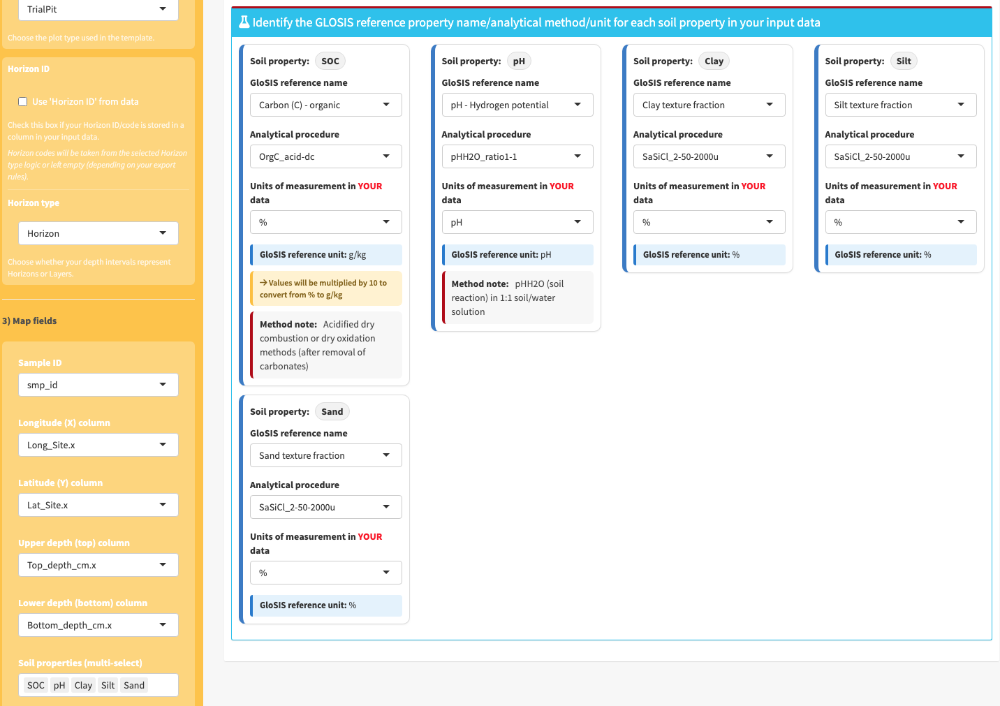
Figure 6.14: Mapping analytical procedures and units of measurement
For each analytical property, the system validates that reported values fall within scientifically plausible ranges using a lookup table with global soil data as a reference. The values for each soil property are compared with specific soil lower and upper thresholds and identified as potential out-of-bound values those out of the range of these thresholds (Figure (ref?)(fig:etl-harmonization-step4)).

Figure 6.15: Validation of analytical values
All errors and warnings identified during the validation phases above are automatically compiled and reported in the main interface. Quality check results are displayed in a dedicated Quality Checks Tab which displays detailed validation results organized by issue type. Users can download a comprehensive Quality Check Report (XLSX format) for further analysis and data cleaning outside the application.
6.7.9 Step 3: Data Correction and Resubmission
Once data quality issues are identified in the Quality Check Report, users must correct the original dataset and resubmit for harmonization.
- The
Metadatatab provides a way to manually add metadata to the exported results. - The
Procedures Referencetab includes information on the analytical procedures in GloSIS, including their units and descriptions.
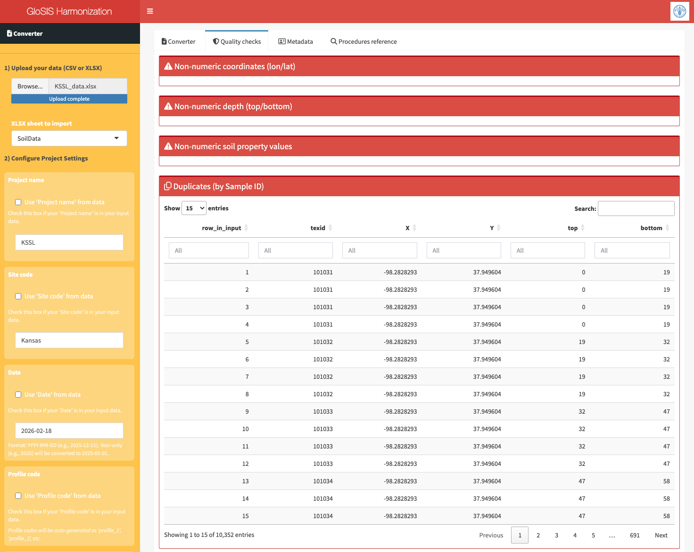
Figure 6.16: Quality Checks Tab.
6.7.10 Step 4: Download Harmonized Data
Once all critical data quality issues have been resolved and the dataset passes validation, users can download the harmonized data in a GloSIS-standard format. In the first step the Prepare XLSX button translates the data into the standardized GloSIS structure and store it in memory as a temporary file. The file then becomes available through the Download XLSX button.
The downloaded file follows the GloSIS standard format, with data organized according to the hierarchical features of interest defined in ISO 28258.
Plot Data Sheet: - Project identifier - Site identifier - Plot identifier - Profile identifier - Plot type identifier (Borehole, TrialPit, Surface) - Number of layers / plot - Date of observation - Longitude (WGS84) - Latitude (WGS84)
Profile Data Sheet: - Profile identifier
Element Data Sheet: - Profile identifier - Element identifier - Element type (Horizon, Layer) - Order element (Element position in the profile) - Upper depth - Lower depth - Horizon identifier
Specimen Sheet: - Profile identifier - Element identifier - Specimen identifier - Analytical properties (GloSIS Standard Units)
Procedures Sheet: - Analytical properties - Analytical properties (GloSIS standard) - Analytical procedures - Unit of measure (GloSIS standard)
Metadata Sheet: - Plot identifier - Provider Metadata
Original Data Sheet: - Profile identifier - Analytical properties (Original Units)
GloSIS Methods Sheet: - GloSIS Procedures Registry List (Informative)
All Analytical Procedures must exist in the available GloSIS
ProceduresRegistry list. This ensures methodology traceability and standardization.Each dataset is unique and may have specific data-quality issues requiring investigation and resolution.
The
Procedureslist is flexible and can incorporate new, well-documented analytical procedures upon request to the GloSIS Working Group team.Properties not in the standard
Procedureslist must be removed from the analyses before data injection into the database to ensure compatibility within GloSIS.Users must resolve all Critical Issues before proceeding to data download. Warning Issues should be carefully reviewed; users can override if values are scientifically justified.
6.7.11 GloSIS Data Standardization
The data injection of soil data into the Glosis database is performed thought a standardized Excel (.xlsx) template that serves as an intermediary format for structuring soil data before its integration into PostgreSQL. This template ensures that the data follows a predefined schema, aligning with the complex relational structure of the GloSIS database. The template consists of multiple sheets, each corresponding to a specific data entity, such as site information, soil horizons/layers, laboratory procedures, and analytical results structured in different sheets. Each column in these sheets is carefully labeled to match the expected database fields, reducing errors and ensuring data consistency. Users are required to fill in the template while adhering to specific data formats, such as numeric values for measurements, categorical values for predefined classifications, and geospatial coordinates in standard longitude and latitude formats. The structured nature of the template minimizes manual intervention and ensures that data is correctly mapped when it is processed by the glosis-shiny application. The application validates the input, identifies potential discrepancies, and harmonizes the dataset before transferring it into PostgreSQL, ultimately simplifying the data submission process while maintaining accuracy and comparability.
The data in the standardized Excel template must be collected in a harmonized manner to ensure consistency and accuracy during integration into the GloSIS database. This requires harmonization of spatial coordinates to the EPSG:4326 coordinate system recorded in the Plot_Data sheet, ensuring homogeneous sample georeferencing. Additionally, the identification of standard soil property names, laboratory methods, and units of measurement must be correctly defined in the Procedures sheet. If the original data is recorded in different units, it must be converted to match the standardized units specified in the Procedures sheet before inclusion in the Element Data sheet.
Furthermore, all soil properties listed in the Element Data and Procedures sheets must correspond to those available in the Codelist sheet, which contains the standardized soil properties defined in the GloSIS codelist. Any property not included in the Codelist sheet must be removed from the template before data injection to ensure compatibility with the GloSIS database. This harmonization process is essential for maintaining data consistency, facilitating data sharing, and ensuring seamless integration with the global soil information system.
Ensuring the correct utilization of the template is essential for the successful execution of the data injection process. Proper adherence to the template structure guarantees data integrity, compatibility, and seamless integration into the PostgreSQL GloSIS Database.
6.7.12 GloSIS Data Viewer
The Data Viewer component (Figure 6.17) provides interactive visualization of soil databases stored in the system, enabling users to validate data integrity before and after database ingestion.
The GloSIS Viewer enables the review of the geographic distribution of sampling sites on a interactive map, preview harmonized records in tabular format with sortable/filterable columns, visualize the variation of soil properties with depth in the soil profile and export selected data to othe formats
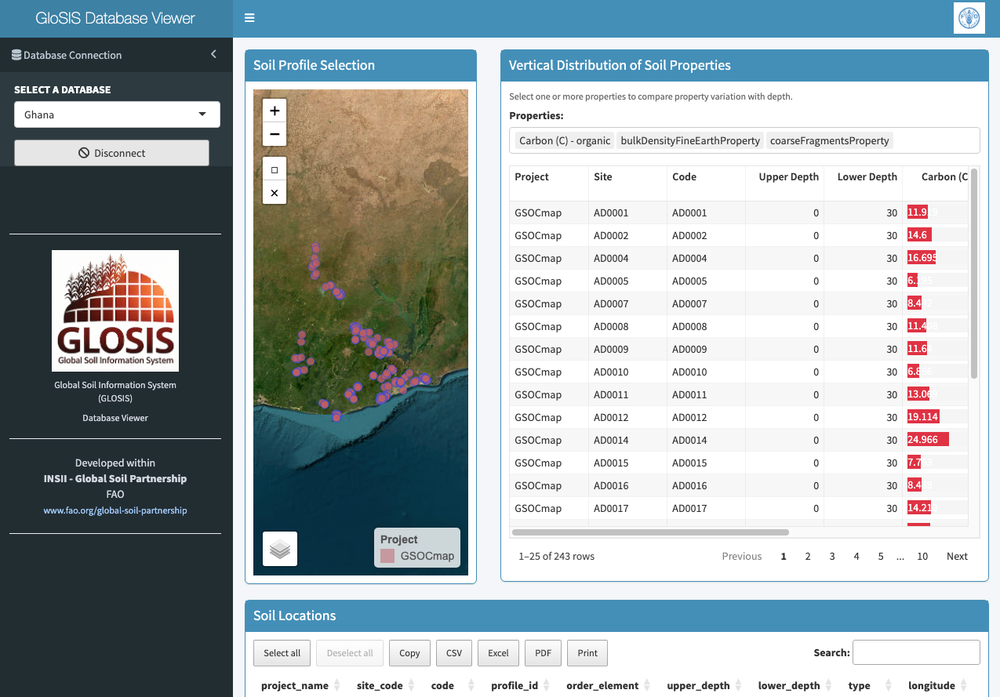
Figure 6.17: Automated Units Conversion in the Information in the GloSIS ETL-Harmonization tool